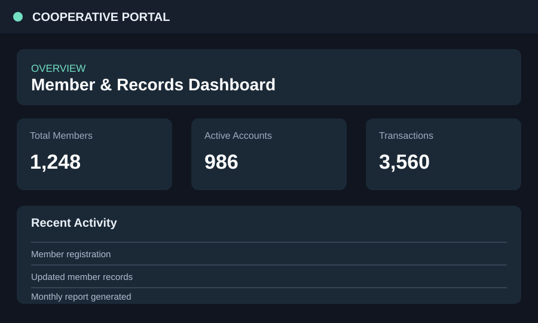
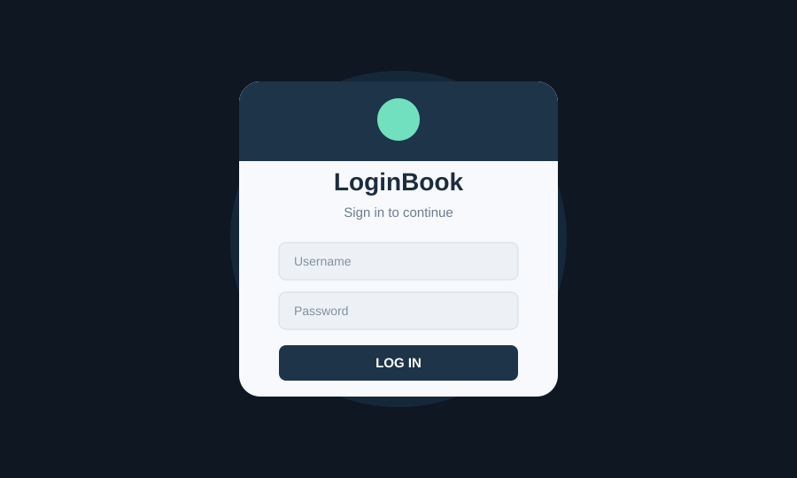
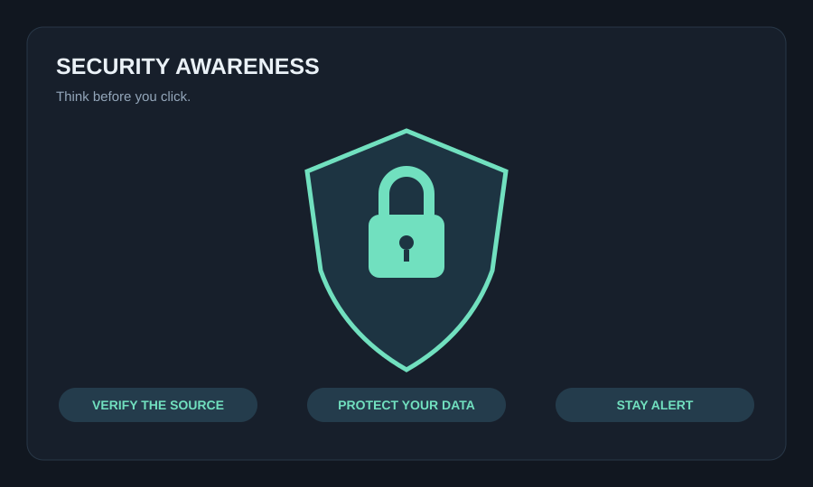

⌘
Programming
Java fundamentals, logic, and object-oriented concepts.
Hi, I'm Joshua G. Ramos — a fourth-year Information Technology student who enjoys turning ideas into practical digital solutions. I'm learning, building, and improving one project at a time.
I believe good technology should solve real problems and make everyday tasks a little easier.
As a BSIT fourth-year student, I'm developing my skills in software development, database concepts, and designing user-friendly systems. My school projects give me a chance to apply what I learn, work through challenges, and understand how technology can support people and organizations.
I'm still growing as a developer, and I value clear communication, teamwork, and being willing to learn from feedback. My goal is to keep building a strong foundation and create solutions that are useful, reliable, and easy to understand.
A growing toolkit built through coursework, practice, and hands-on project experience.
Java fundamentals, logic, and object-oriented concepts.
HTML, CSS, responsive layouts, and front-end basics.
Organizing records, data relationships, and CRUD workflows.
Authentication, safe data handling, and security awareness.
Breaking requirements into manageable steps.
Understanding user needs and mapping system processes.
Clear navigation and practical user experiences.
Sharing ideas, feedback, and responsibilities.
Academic and practice projects that reflect what I'm learning in IT.

A proposed digital platform designed to help organize member information and everyday records for a cooperative. The project focuses on making common tasks easier to track and keeping important information in one place.

A Java-based login application created to practice the fundamentals of user authentication and interface flow. It helped me understand how input validation and a structured sign-in process contribute to a more organized application.

A learning activity focused on everyday digital safety, including checking suspicious links, protecting personal information, and understanding why secure online habits matter.
A system-planning exercise centered on reviewing a manual workflow, identifying opportunities for improvement, and outlining how a digital solution could make information easier to manage.
Note: The project preview images in this starter version are illustrative placeholders because the original images could not be extracted from the reference link. Replace the SVG files in the assets folder with your actual project screenshots when available.
Every class, collaboration, and project adds something to the way I think about technology.
Learning programming, computer systems, databases, and the principles behind reliable software.
Working through academic projects to practice planning, implementation, testing, and documentation.
Strengthening technical skills while learning to explain solutions clearly and work well with a team.
Ready to keep learning, contribute to meaningful work, and gain experience solving real-world problems.
Have a project idea, an opportunity, or just want to connect? I'd be glad to hear from you. Add your preferred email and social links here before publishing.